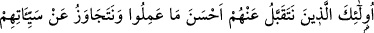
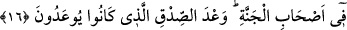
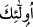
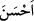
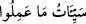

16. İşte, yaptıklarının iyisini kabul edeceğimiz ve günahlarını bağışlayacağımız bu
kimseler cennetlikler arasındadırlar. Bu, kendilerine verilen doğru bir sözdür.
“Onlar”, bu yüce sıfatların sahibi olanlar, “öyle kişilerdir ki, yaptıklarının”, vacip
yahut mendup tâatlerin “en iyisini onlardan kabul ederiz.” Mübah ameller güzel
olmakla beraber onların yapılmasından sevap hâsıl olmaz “ve onların” tevbe etmeden
önce yaptıkları “kötülüklerinden geçeriz. (Bu kimseler) cennet halkı arasındadırlar.”
Onlar cennet halkının sırasına dizilmişlerdir. “Bu, (dünyâda) kendilerine”
peygamberlerin diliyle “söylenen doğru söz(ün gerçekleşmesi)dir.” Bunlardan dolayı
cezalandırılmazlar.
Burada “
” ile insana işâret edilmiş olup bundan murad geride nitelikleri beyân
edilmiş olan insan cinsi olduğundan, çoğul yapılmıştır.
Fütûhât tercümesinde şöyle denilmiştir:
Yaptığın bütün fiil ve hareketin Hak Teâlâ’ya yakınlaşmak maksadıyla yapılması
gerekir. Bu hareket mübah ya da senin mübah olduğuna inandığın bir işse bile onu Hak
Teâlâ’ya yakınlaşma niyetiyle yap. Eğer bu hareket mübah değilse ve sen onunla meşgul
olmazsan bu niyetinle o mübah işten sevap elde edersin.
Fakîr (Bursevî) der ki: Bana göre âyette bir başka vecih de şudur: Burada “
”
kelimesinin muzaf olması sıfatın mevsûfuna izafeti kabilindendir. “
”,
“yaptıklarının kötülükleri” (el-Câsiye, 45/33) âyetinde olduğu gibi. Takdîrî ibare
“onların en güzel amelleri” demektir. Tabiî ki bu ifâdeden onların güzel amellerinin
kabul edilmemesi lazım gelmez. Bilakis Allah Teâlânın fazl ve keremi mucebince
onların yaptıkları bütün amellerin Allah katında çok güzel olduğuna işâret edilmektedir.
Hasan Basrî şöyle demiştir: Allah Teâlâ kimi aşağılamayı murad ederse onu, yaptığı
kötülükle hemen cezalandırır. Allah Teâlâ kime de lütuf ve ihsanda bulunmayı murad
ederse, artık onun günahlarından geçer. Bu insanların en güzel amellerinin kabul edilip
günahlarından geçilmesi Allah Teâlâ’nın bu konuda onlara bir vaad ve sözüdür.
Şeyh Necmüddin (k.s.) Te’vilâtı’nda şöyle demektedir:
Âyette anne babanın çocukta terbiye ve in’am yâni iyilik ve ihsan hakkı olduğundan
hürmet ve saygı üzere anne babanın hakkını gözetmeye işâret edilmektedir. Bu şekilde
insan, Hak Teâlâ hazretlerinin hakkını da saygı üzere gözetmeyi bilmiş olsun. Çünkü
Allah’ın insan üzerinde rubûbiyet/rab olma hakkı vardır. Varlık nimetini ihsan eden
Allah Teâlâ hürmete, saygıya herkesten, anne babadan daha çok hak sahibidir ve daha
layıktır.
Bazıları şöyle demiştir: Âyet anne hakkının baba hakkından daha büyük olduğuna
delalet etmektedir. Çünkü Allah Teâlâ önce anne babayı bir arada zikretmiş, sonra